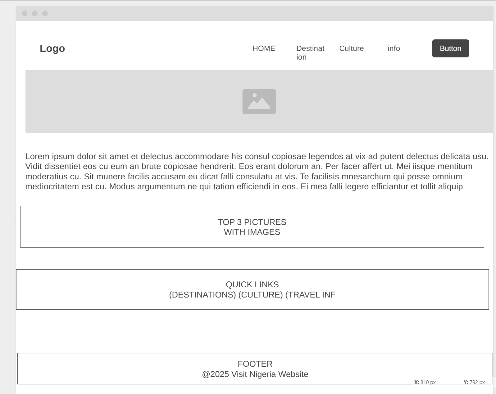
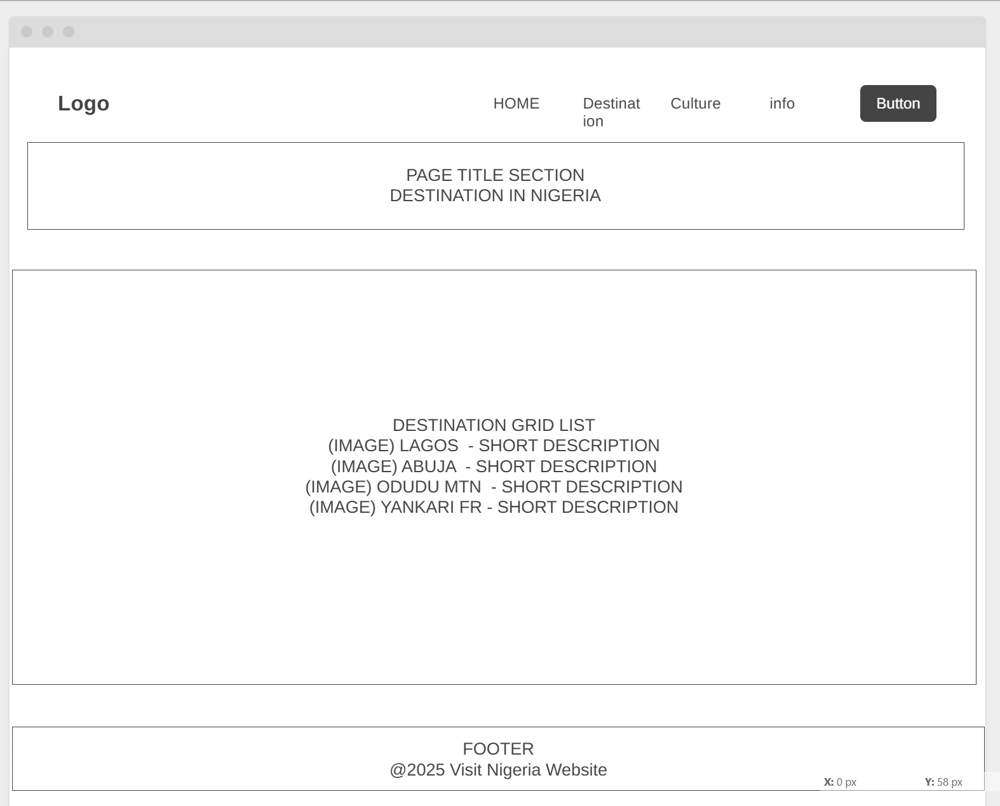

Purpose
The purpose of this website is to provide reliable, organized, and engaging information about tourism in Nigeria for travelers, students, and visitors from around the world. It will serve as a guide to help users explore destinations, understand Nigerian culture, and find essential travel information before visiting the country.
Audience
The intended audience includes international tourists, travel researchers, Nigerians living abroad, and anyone planning to visit Nigeria for the first time. The site will help them learn where to go, what to expect, and how to prepare for a successful trip.
Dynamic Elements
JavaScript will be used to create interactive and dynamic features such as:
- ✔ Slideshow of Nigerian attractions on the home page.
- ✔ Destination cards generated from arrays.
- ✔ Filters for categories like cities, parks, mountains, and beaches.
- ✔ A collapsible FAQ section in the Travel Info page.
- ✔ Dynamic image gallery with lightbox popups.
- ✔ Form validation for the Contact page.
Logo
Your website will use the following logo:

You may create your final logo using Canva.com or Adobe Logo Maker.
Color Palette
Chosen color scheme inspired by the Nigerian flag:
- Primary Green: #0A8A3A
- White: #FFFFFF
- Dark Green (header bg): #04612B
- Gold (accents): #D4AF37
Fonts
Main font: Montserrat
Secondary font: Open Sans
Content
Home Page
Welcome message, slideshow banner, introduction to Nigeria, and featured destinations. Quick links to Destinations, Culture, and Travel Info pages.
Destinations Page
A dynamic list of major Nigerian tourist destinations such as Lagos, Abuja, Obudu Mountain Resort, Yankari Game Reserve, Olumo Rock, and more. Includes images, descriptions, and filters.
Culture Page
Information about Nigerian foods, festivals, music, languages, Nollywood, and cultural traditions.
Travel Info Page
Visa requirements, transportation, safety guidelines, currency details, weather expectations, and travel tips for new visitors.
Gallery Page
A dynamic gallery showcasing images of Nigeria’s cities, culture, and attractions.
Contact Page
A contact form for travelers to reach out for additional information or assistance.
Wireframes
Home Page Wireframe
Child Page Wireframe
You may draw your wireframes in Figma, Canva, or by hand and upload them.